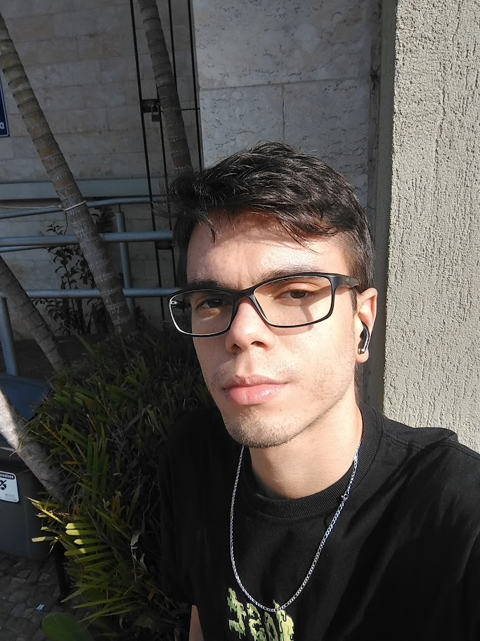

Quem sou eu?
Olá! meu nome é Arthur, tenho 22 anos, moro em Belo-Horizonte, MG, e sou um entusiasta da tecnologia que está atualmente embarcando na jornada de Análise e Desenvolvimento de Sistemas.
Desde pequeno sempre fui apaixonado por computadores e jogos, virava noites e noites jogando e conversando com amigos, numa epóca que a melhor internet disponível era a discada. Naturalmente, com o crescimento e evolução da tecnologia, meu amor e fascínio por ela cresceram ainda mais. Nesse ponto, comecei a me interessar pelo aspecto mais técnico da coisa. Ainda me lembro do dia em que abri, limpei e formatei meu PC pela primeira vez, o sentimento indescritível de ter adquirido o conhecimento necessário e explorar mais a fundo as possibilidades de um sistema operacional, ter contato físico com um hardware, tudo aquilo ficou guardado com muito carinho na minha mente. A partir daí sempre busquei aprender sobre esse mundo tão vasto.
Desde o início da minha jornada acadêmica, tenho imerso-me em desafios complexos e empolgantes que a área de tecnologia oferece. Cada linha de código escrita é uma oportunidade para mim, não apenas para resolver problemas, mas para expressar minha criatividade e construir experiências significativas. Além de reviver aquele mesmo sentimento de anos atrás, da descoberta, de possibilidades, a cada linguagem nova que aprendo, a cada funcionalidade, tudo alimenta ainda mais minha sede pelo aprendizado.
Meu interesse não se limita apenas ao código, mas também se estende à resolução de problemas complexos e à criação de soluções inovadoras. Acredito firmemente que a tecnologia tem o poder de transformar o mundo e estou ansioso para contribuir para essa transformação.
Este portfolio é um reflexo do meu comprometimento com a excelência e da minha paixão por criar soluções tecnológicas significativas. Estou animado para explorar novas oportunidades, colaborar em projetos desafiadores e continuar aprimorando minhas habilidades para contribuir positivamente para o mundo da tecnologia.